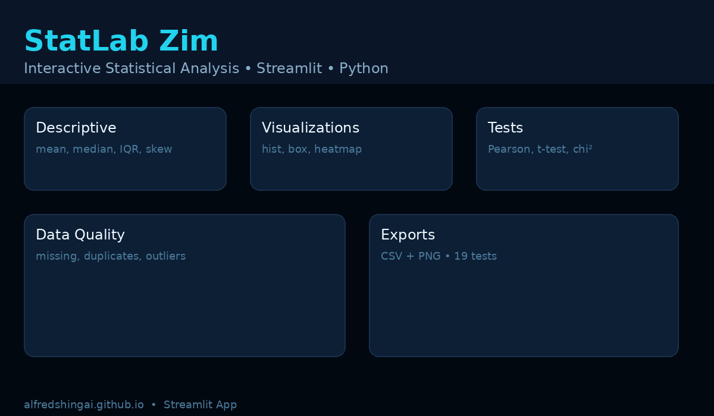

Python
Python Pandas
Pandas NumPy
NumPy SciPy
SciPy Streamlit
Streamlit FastAPI
FastAPI Jupyter
Jupyter Power BI
Power BI Excel
Excel Plotly
PlotlyStatLab Zim
An interactive statistics lab — from upload to insight.

CSV upload → quality check → descriptives → 6 charts → 5 tests → export
StatLab Zim is my attempt to make introductory statistics usable. No SPSS, no syntax — just a CSV. It handles messy real-world files: missing cells, duplicate rows, mixed types. You get a 13-metric numeric summary, categorical frequency tables, 6 interactive Plotly charts, and 5 tests with plain-language decisions (Pearson, Spearman, regression, Welch t-test, chi-square).
Built solo in Python: pandas, SciPy, Plotly, Streamlit. 19 pytest tests, graceful empty-state handling, CSV/PNG exports. The hardest part wasn't the stats — it was the empty file with only a header edge case.
StreamlitPandasSciPyPlotlyPytest